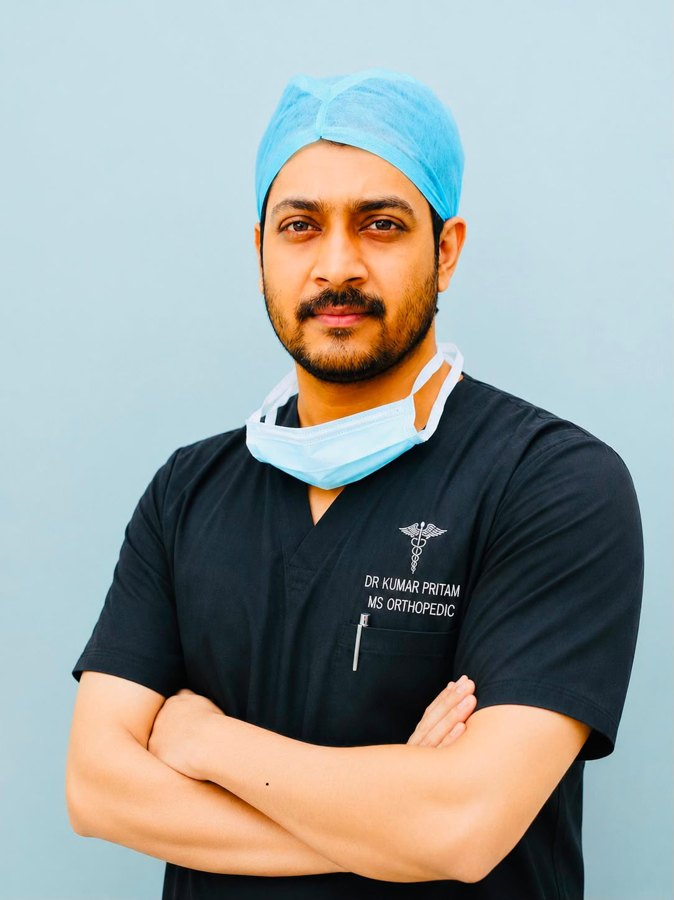

Fracture management, trauma reconstruction, and outcome-based orthopaedic research — presented for academic reference and collaboration.

Dr Kumar Pritam is an orthopaedic surgeon focused on fracture management, trauma reconstruction, and outcome-based research. This site presents his academic work in an accessible, citable format — a digital portfolio for research dissemination and professional collaboration.
The figures below come from an illustrative model dataset built to demonstrate study design and outcome reporting. They are not real patient outcomes and must not be used for clinical decision-making or cited as evidence. The work is shown as a methodology template for future real-world data collection.
How clinical, functional, radiological and complication outcomes between orthogonal and parallel dual-plating constructs could be compared and reported. Distal humerus fractures are technically demanding; a clear reporting structure helps guide surgical thinking and future real-world data collection.
Values shown are modelled for demonstration. Treat them as a reporting template, not findings.
| Variable | Orthogonal | Parallel | p value |
|---|---|---|---|
| Patients | 20 | 20 | — |
| Age, years | 43.8 ± 11.9 | 45.0 ± 11.7 | 0.760 |
| Sex, male / female | 13 / 7 | 12 / 8 | 1.000 |
| AO/OTA 13-C1 / C2 / C3 | 5 / 9 / 6 | 4 / 10 / 6 | 0.921 |
| Final MEPS | 86.1 ± 6.9 | 90.0 ± 6.0 | 0.068 |
| Flexion–extension arc | 114.7 ± 13.0° | 122.0 ± 11.5° | 0.066 |
| Time to radiological union | 22.1 ± 4.1 wk | 19.2 ± 3.0 wk | 0.014 |
In the model, both constructs reach satisfactory elbow function at final follow-up — consistent with the idea that either strategy can produce acceptable outcomes when fixation is stable and rehabilitation is appropriate.
Tracked complications include stiffness, transient ulnar neuropathy, superficial infection, heterotopic ossification, and delayed union. The manuscript also carries a data-collection proforma and follow-up sheet for real patient documentation.
Preview images only. The source PDF is intentionally not hosted here; reach out below for academic correspondence.
For academic communication, correspondence, and collaboration.